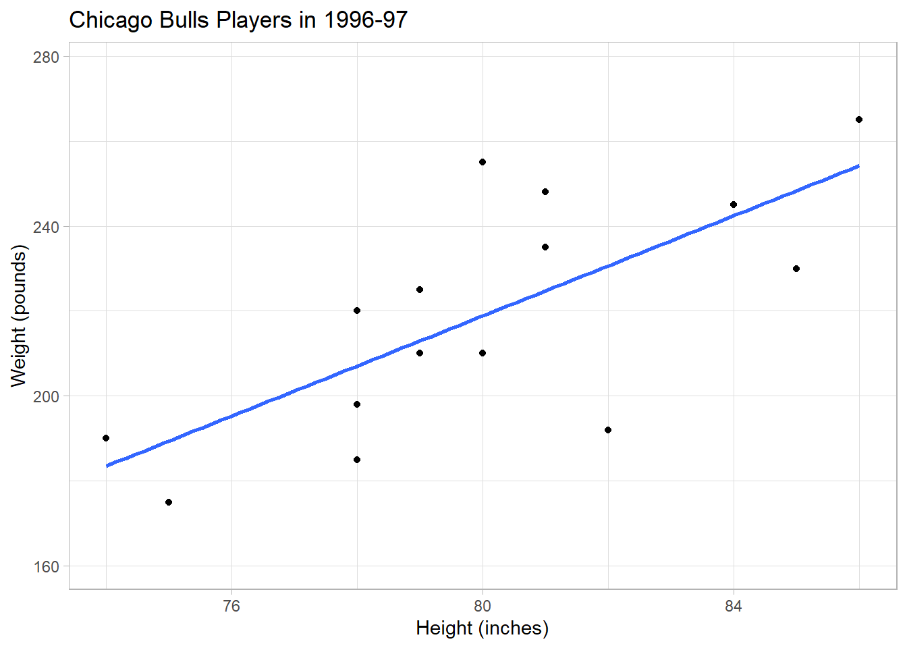
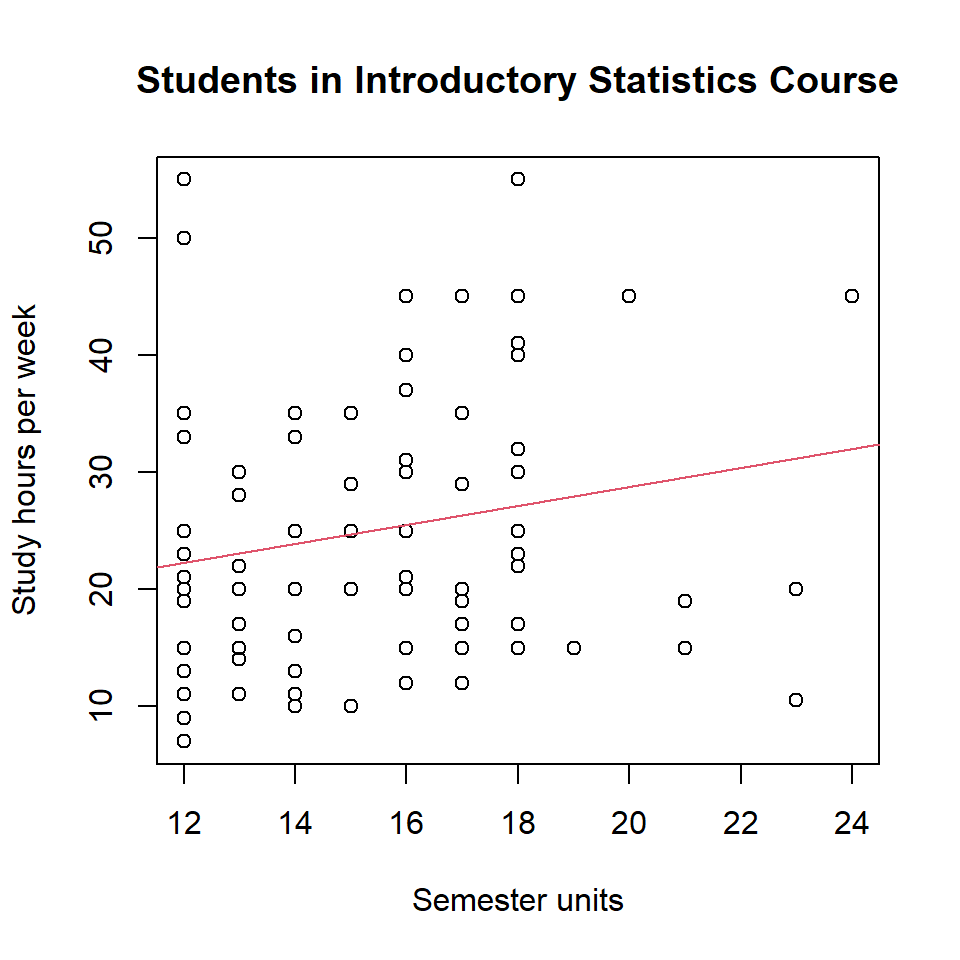
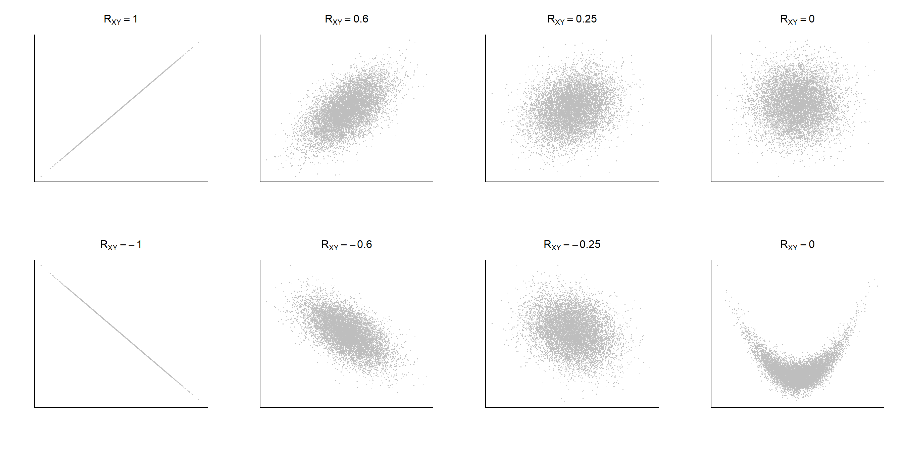
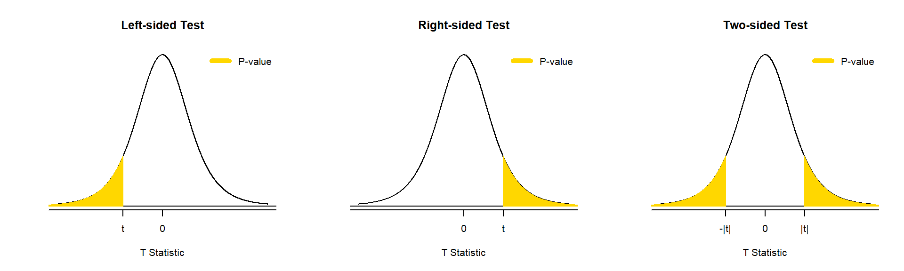
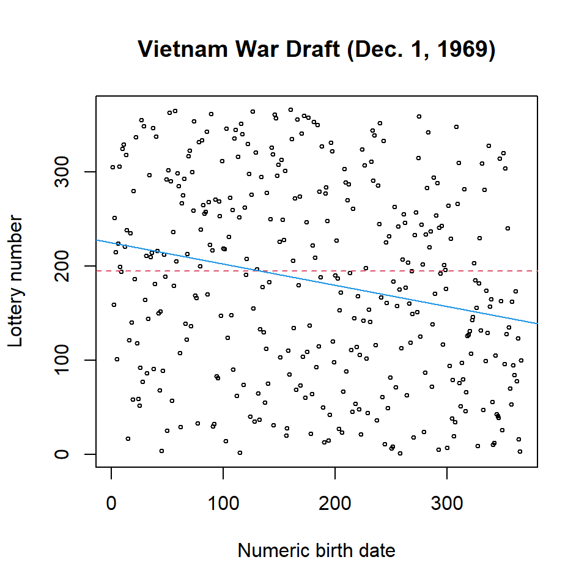
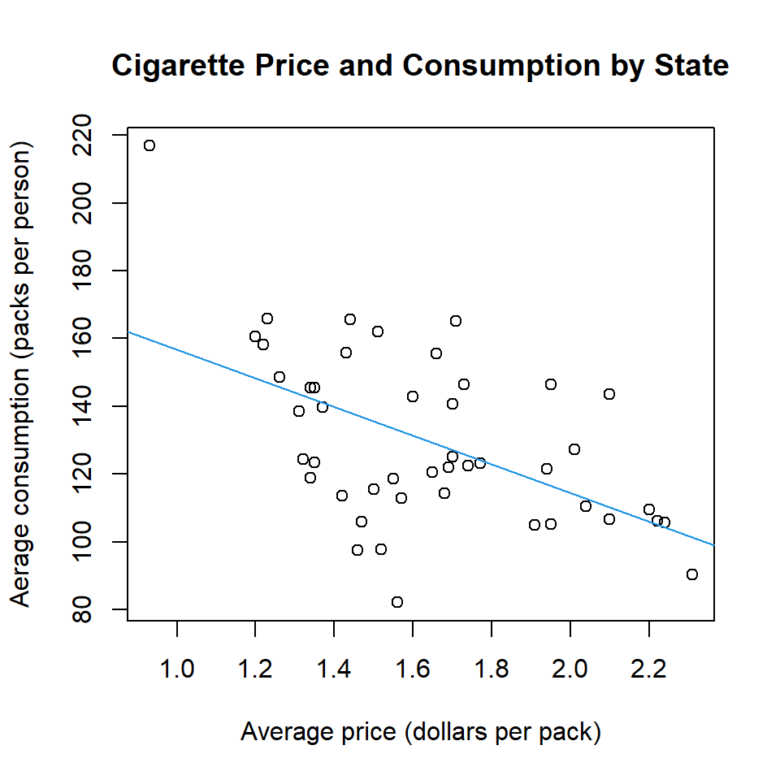
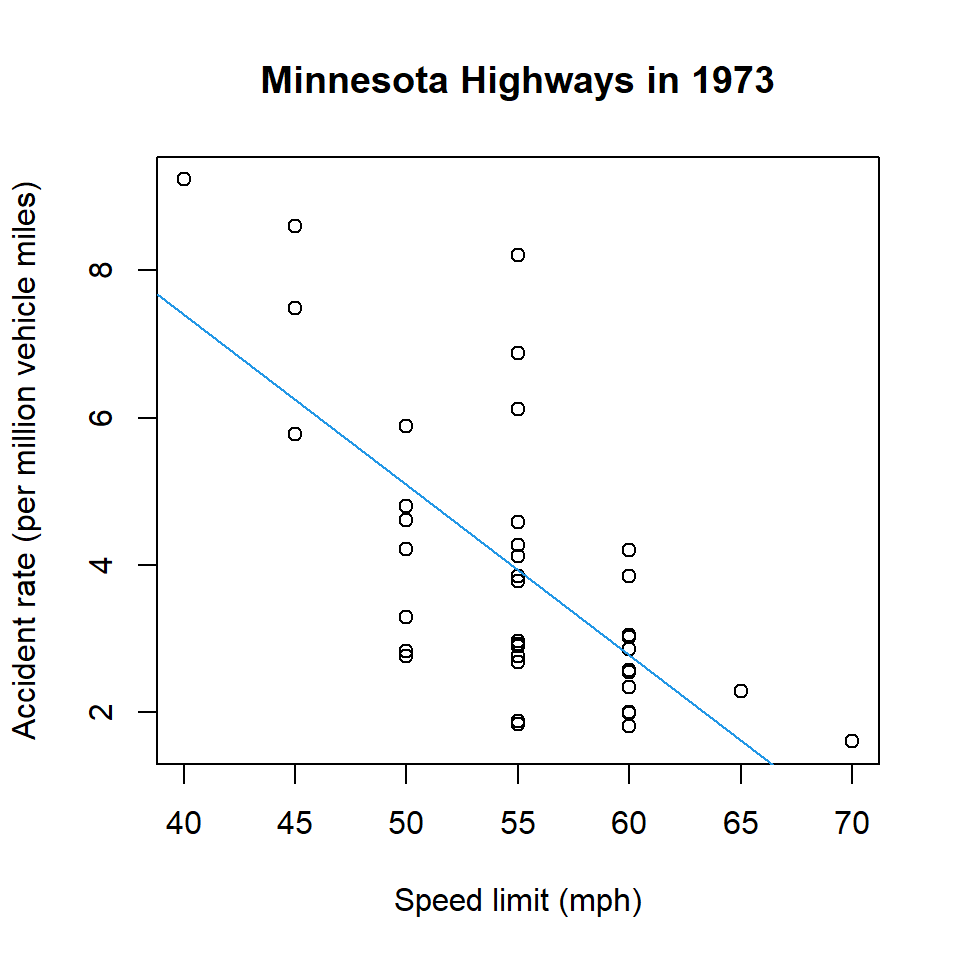
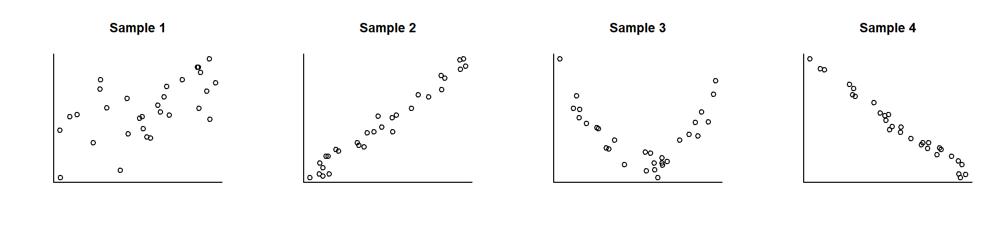

Correlation
A statistical research question can be formulated as “Is \(Y\) explained by \(X\)?” or “Does \(Y\) depend on \(X\)?” In this kind of question, \(Y\) is referred to as the response variable, and \(X\) is referred to as the explanatory variable. The two-sample t-test addresses this kind of question when \(Y\) is numeric (following a normal distribution) and \(X\) is categorical with two levels. The ANOVA is when \(Y\) is numeric and \(X\) is categorical with three or more levels. In this chapter, both \(X\) and \(Y\) are numeric, and we assume that the expectation of \(Y\) changes with respect to \(X\).
1 Case Study 1: Height and Weight of NBA Players
The research question is whether the expected weight increases with respect to height or not among basketball players. The dataset \(\texttt{chicago-bulls-1996-97.csv}\) is the roster of \(n = 15\) players of Chicago Bulls in the season of 1996-97.
bulls <- read_csv("data/chicago-bulls-1996-97.csv", show_col_types = FALSE) ### read data
bulls ### print all data (15 rows)# A tibble: 15 × 7
No Player Position Ht Wt `Birth Date` Exp
<dbl> <chr> <chr> <dbl> <dbl> <chr> <dbl>
1 1 Randy Brown PG 74 190 5/22/1968 5
2 30 Jud Buechler SF 78 220 6/19/1968 6
3 35 Jason Caffey PF 80 255 6/12/1973 1
4 18 Bison Dele C 81 235 4/6/1969 5
5 9 Ron Harper PG 78 185 1/20/1964 10
6 23 Michael Jordan SG 78 198 2/17/1963 11
7 25 Steve Kerr PG 75 175 9/27/1965 8
8 7 Toni Kukoc SF 82 192 9/18/1968 3
9 13 Luc Longley C 86 265 1/19/1969 5
10 0 Robert Parish C 85 230 8/30/1953 20
11 33 Scottie Pippen SF 80 210 9/25/1965 9
12 91 Dennis Rodman PF 79 210 5/13/1961 10
13 8 Dickey Simpkins PF 81 248 4/6/1972 2
14 6 Matt Steigenga SF 79 225 3/27/1970 0
15 34 Bill Wennington C 84 245 4/26/1963 9The column \(\texttt{Wt}\) is the body weight in pounds, and the column \(\texttt{Ht}\) is the height in inches. As our objective is to explain the weight (\(\texttt{Wt}\)) by the height (\(\texttt{Ht}\)), the weight is the response variable, and the height is the explanatory variable in our analysis. The two numeric variables can be visualized using the scatterplot. Can we see any linear pattern in the random data points?
gf_point( Wt ~ Ht, data = bulls,
title = "Chicago Bulls Players in 1996-97",
xlab = "Height (inches)",
ylab = "Weight (pounds)" ) |>
gf_lm()
2 Sample Covariance
In this section, we quantify the direction and strength of linear relationship between two numeric variables. Let \((X_i, Y_i)\) be the paired variables of the \(i^{\mathrm{th}}\) subject in a sample for \(i = 1, 2, \dots, n\). The sample covariance is a statistic which is defined as follows:
\[ S_{XY} = \frac{1}{n - 1} \sum_{i=1}^n (X_i - \bar{X})(Y_i - \bar{Y}) \tag{1}\]
where \(\bar{X} = \frac{1}{n} \sum_{i=1}^n X_i\) and \(\bar{Y} = \frac{1}{n} \sum_{i=1}^n Y_i\) are the sample means. The sample covariance measures the average deviation of each variable from the mean. If \(Y_i\) is expected to be above \(\bar{Y}\) when \(X_i\) is above \(\bar{X}\), the sample covariance is positive. If \(Y_i\) is expected to be above \(\bar{Y}\) when \(X_i\) is below \(\bar{X}\), the sample covariance is negative. Below is the calculation of sample covariance of \(\texttt{Ht}\) and \(\texttt{Wt}\).
bulls_cov <- bulls |>
select(Player, Position, Ht, Wt) |>
mutate(mean_ht = mean(~Ht),
mean_wt = mean(~Wt),
dev_ht = Ht - mean_ht,
dev_wt = Wt - mean_wt,
dev_ht_wt = dev_ht*dev_wt)
bulls_cov# A tibble: 15 × 9
Player Position Ht Wt mean_ht mean_wt dev_ht dev_wt dev_ht_wt
<chr> <chr> <dbl> <dbl> <dbl> <dbl> <dbl> <dbl> <dbl>
1 Randy Brown PG 74 190 80 219. -6 -28.9 173.
2 Jud Buechler SF 78 220 80 219. -2 1.13 -2.27
3 Jason Caffey PF 80 255 80 219. 0 36.1 0
4 Bison Dele C 81 235 80 219. 1 16.1 16.1
5 Ron Harper PG 78 185 80 219. -2 -33.9 67.7
6 Michael Jordan SG 78 198 80 219. -2 -20.9 41.7
7 Steve Kerr PG 75 175 80 219. -5 -43.9 219.
8 Toni Kukoc SF 82 192 80 219. 2 -26.9 -53.7
9 Luc Longley C 86 265 80 219. 6 46.1 277.
10 Robert Parish C 85 230 80 219. 5 11.1 55.7
11 Scottie Pippen SF 80 210 80 219. 0 -8.87 0
12 Dennis Rodman PF 79 210 80 219. -1 -8.87 8.87
13 Dickey Simpkins PF 81 248 80 219. 1 29.1 29.1
14 Matt Steigenga SF 79 225 80 219. -1 6.13 -6.13
15 Bill Wennington C 84 245 80 219. 4 26.1 105. bulls_cov |>
summarize(covariance = sum(dev_ht_wt/(n()-1)))# A tibble: 1 × 1
covariance
<dbl>
1 66.5The calculated sample covariance of \(\texttt{Ht}\) and \(\texttt{Wt}\) is \(+66.5\). Its unit is inches \(\times\) pound, and it is not easy to be interpreted in the context. At least, its sign (\(+\)) indicates that the player’s weight is expected to be above the average weight (219 pounds) when the player’s height is above average (80 inches). The sample covariance can be simply calculated by the \(\texttt{cov}\) function.
cov( Wt ~ Ht, data = bulls ) ### sample covariance of height and weight[1] 66.53 Sample Correlation
The sample correlation is defined as
\[ R_{XY} = \frac{S_{XY}}{S_{X} \, S_Y} \]
where \(S_{XY}\) is the sample covariance defined in Equation 1 and
\[ \begin{aligned} S_X & = \sqrt{ \frac{1}{n-1} \sum_{i=1}^n (X_i - \bar{X})^2 } \, , \\ S_Y & = \sqrt{ \frac{1}{n-1} \sum_{i=1}^n (Y_i - \bar{Y})^2 } \end{aligned} \]
are the sample standard deviations of each variable. Continuing from the calculation of sample covariance of \(\texttt{Ht}\) and \(\texttt{Wt}\), below is the calculation of sample correlation of \(\texttt{Ht}\) and \(\texttt{Wt}\).
bulls_cov |>
summarize(covariance = sum(dev_ht_wt/(n()-1)),
correlation = covariance/(sd(~Ht)*sd(~Wt)))# A tibble: 1 × 2
covariance correlation
<dbl> <dbl>
1 66.5 0.719Alternatively, the sample correlation can be calculated by the \(\texttt{cor}\) function.
cor( Wt ~ Ht, data = bulls ) ### sample correlation of height and weight[1] 0.719134The sample correlation 0.719 is a unitless statistic, so it does not have a clear interpretation. Instead, we verbally describe the sample correlation as in Table ?@tbl-cor. (The verbal description varies by research areas, textbooks, literature, etc.) According to ?@tbl-cor, the height and weight of Chicago Bulls players have a very strong positive correlation.
| Range | Description |
|---|---|
| \((+0.7, +1)\) | Strong positive correlation |
| \((+0.3, +0.7)\) | Moderate positive correlation |
| \((+0.1, +0.3)\) | Weak positive correlation |
| \((-0.1, +0.1)\) | Negligible correlation |
| \((-0.3, -0.1)\) | Weak negative correlation |
| \((-0.7, -0.3)\) | Moderate negative correlation |
| \((-1, -0.7)\) | Strong negative correlation |
4 Case Study 2: Units and Study Hours
The dataset \(\texttt{studyhours.csv}\) is a sample of $n = 110$ college students in an introductory statistics course. The column \(\texttt{units}\) is the number of units taking in the semester, \(\texttt{hours}\) is the study hours per week outside of classroom, and both \(\texttt{units}\) and \(\texttt{hour}\) are numeric variables. Can study hours be explained by units?
studyhours = read.csv("Data/studyhours.csv")
plot( hours ~ units, data = studyhours,
main = "Students in Introductory Statistics Course",
xlab = "Semester units",
ylab = "Study hours per week" )
abline( lm( hours ~ units, data = studyhours ), col = 2 )
cor( hours ~ units, data = studyhours ) ### sample correlation of units and study hours[1] 0.1958239The sample correlation of 0.196 indicates that the units and study hours of college students have a weak positive correlation. The expected study hours per week (linearly) increases with respect to units, but the (linear) relationship is weak.
5 Properties of Sample Correlation
The sample correlation is a universal statistic for quantifying the direction and strength of the linear relationship between two numeric variables \(X\) and \(Y\). It has the following properties:
- The sample correlation is a unitless statistic.
- The sample correlation is between –1 and +1. (They imply a perfect negative and positive linear relationship, respectively.)
- The sample correlation of \(X\) and \(Y\) is the same as the sample correlation of \(Y\) and \(X\).
- A sample correlation of zero implies that no linear relationship is observed between \(X\) and \(Y\).
- It measures a linear relationship only, and does not measure a non-linear relationship.
Below are scatterplots of hypothetical samples and their sample correlations.

6 Correlation Test
If two numeric variables \(X\) and \(Y\) have no linear relationship, the sample correlation \(R_{XY}\) will be close to zero. Given a sample correlation calculated from a sample of size \(n\), we can test whether the true correlation is zero or not. Let \(\rho_{XY}\) be the true correlation between \(X\) and \(Y\).
6.1 Hypotheses
The null hypothesis is \(H_0\): \(\rho_{XY} = 0\), and the alternative hypothesis is one of the following three kinds.
\(H_1\): \(\rho_{XY} > 0\) (right-sided test)
\(H_1\): \(\rho_{XY} < 0\) (left-sided test)
\(H_1\): \(\rho_{XY} \ne 0\) (two-sided test)
6.2 Test Statistic
The test statistic is given by
\[ T = \frac{R_{XY} - 0}{ \texttt{SE} } \]
which is called a T statistic (for testing correlation). The denominator \(\texttt{SE}\) is the standard error which quantifies the uncertainty of sample correlation \(R_{XY}\), and it is given by
\[ \texttt{SE} = \sqrt{ \frac{1 - (R_{XY})^2}{ n - 2 } } \, . \]
Assuming \(H_0\): \(\rho_{XY} = 0\) is true, the null distribution of \(T\) is the T distribution with \(\nu\) degrees of freedom, \(T \sim \mathcal{T}(\nu)\) where \(\nu = n - 2\).
6.3 P-value
Given \(T = \texttt{t}\), the calculation of p-value depends on the direction of \(H_1\) as follows:
- Right-sided test: p = \(1 - \texttt{pt}(\texttt{t}, \nu)\)
- Left-sided test: p = \(\texttt{pt}(\texttt{t}, \nu)\)
- Two-sided test: p = \(2 * \texttt{pt}(\texttt{t}, \nu)\) if \(\texttt{t} < 0\) or p = \(2 * (1 - \texttt{pt}(\texttt{t}, \nu))\) if \(\texttt{t} > 0\)

If p-value is less than a fixed significance level of \(\alpha\), we conclude \(H_1\). Otherwise, we conclude \(H_0\). The universal definition of p-value is the probability of observing the currently observed test statistic or stronger evidence for \(H_1\) under the assumption of \(H_0\). To this end, if p-value is small, it is evidence against \(H_0\) and supports \(H_1\).
6.4 Example
For the purpose of demonstration, let \(X\) be the semester units and \(Y\) be the study hours per week in the population of college students. The parameter of interest is \(\rho_{XY}\), the population correlation between \(X\) and \(Y\), and we calculated a sample correlation of \(R_{XY} = 0.196\) in a sample of size \(n = 110\). We can perform the right-sided correlation test, \(H_0\): \(\rho_{XY} = 0\) versus \(H_1\): \(\rho_{XY} > 0\), as follows.
( r = cor( hours ~ units, data = studyhours ) ) ### sample correlation[1] 0.1958239( n = dim(studyhours)[1] ) ### sample size (number of rows in the data)[1] 110( se = sqrt( (1 - r^2) / (n - 2) ) ) ### standard error[1] 0.09436204( t = ( r - 0 ) / se ) ### T statistic[1] 2.07524( p = ( 1 - pt(t, n - 2) ) ) ### p-value[1] 0.02016997Even though we observed a weak positive correlation (?@tbl-cor), at a significance level of \(\alpha = 0.05\), the sample (110 college students) is statistically significant evidence that the semester units and study hours have a positive linear relationship (T = 2.075, DF = 108, and p = 0.020).
6.5 Using \(\texttt{cor.test}\) Function in R
The \(\texttt{cor.test}\) function is useful for the correlation test.
The first argument is \(\texttt{y} \sim \texttt{x}\) where \(\texttt{x}\) and \(\texttt{y}\) are numeric variables.
\(\texttt{data}\) is the data frame name.
\(\texttt{alternative}\) is the direction of alternative hypothesis. Specify \(\texttt{"greater"}\) for a right-sided test, \(\texttt{"less"}\) for a left-sided test, or \(\texttt{"two.sided"}\) for a two-sided test.
cor.test( hours ~ units, data = studyhours, alternative = "greater" )
Pearson's product-moment correlation
data: hours and units
t = 2.0752, df = 108, p-value = 0.02017
alternative hypothesis: true correlation is greater than 0
95 percent confidence interval:
0.03935182 1.00000000
sample estimates:
cor
0.1958239 7 Case Study 3: Vietnam War Draft
During the Vietnam War (1955-1975), the U.S. Selective Service drafted about 2.2 million men between 1964 and 1973. The U.S. Selective Service randomly matched birth dates and lottery numbers, and men who had a lottery number of 195 or below should be on reserve. The question of interest is whether the lottery was truly random or not. Let us take a look at the dataset \(\texttt{draft1969.csv}\).
draft = read.csv("Data/draft1969.csv") ### read data
head(draft, 5) ### first 5 lines BirthMonth BirthDay DateNumeric Lottery
1 1 1 1 305
2 1 2 2 159
3 1 3 3 251
4 1 4 4 215
5 1 5 5 101tail(draft, 5) ### last 5 lines BirthMonth BirthDay DateNumeric Lottery
362 12 27 362 78
363 12 28 363 123
364 12 29 364 16
365 12 30 365 3
366 12 31 366 100The column \(\texttt{DateNumeric}\) is the numeric birth date (e.g., 1 to 366 for January 1 to December 31), and the column \(\texttt{Lottery}\) is the randomly matched lottery number (1 to 366). For example, healthy men who were born on January 1 were not drafted (\(\texttt{Lottery} = 305\)) and healthy men who were born on December 31 were drafted (\(\texttt{Lottery} = 100\)). To investigate whether the lottery was fair (purely random) or not, the correlation test can be applied with \(H_0\): \(\rho_{XY} = 0\) (zero correlation between the two numeric variables) and \(H_1\): \(\rho_{XY} \ne 0\) (non-zero correlation) where \(X\) and \(Y\) denote the numeric birth date and lottery number, respectively. The below scatterplot presents the data visually.
plot( Lottery ~ DateNumeric, data = draft, cex = 0.5,
xlab = "Numeric birth date",
ylab = "Lottery number",
main = "Vietnam War Draft (Dec. 1, 1969)" )
abline( h = 195, col = 2, lty = 2 ) ### horizontal dotted line at 195
abline( lm(Lottery ~ DateNumeric, data = draft), col = 4, lty = 1 ) ### fit a line to data points
Let us conduct the correlation test (two-sided) using the \(\texttt{cor.test}\) function.
cor.test( Lottery ~ DateNumeric, data = draft, alternative = "two.sided" )
Pearson's product-moment correlation
data: Lottery and DateNumeric
t = -4.4198, df = 364, p-value = 1.305e-05
alternative hypothesis: true correlation is not equal to 0
95 percent confidence interval:
-0.3207751 -0.1260932
sample estimates:
cor
-0.2256861 The sample correlation –0.226 indicates a weak negative correlation, and it is evidence that the chance of being drafted is higher for men of later birth dates. At a significance level of \(\alpha = 0.05\), the result is statistically significant that the draft was not pair, particularly against men of later birth dates (T = –4.420, DF = 364, and p < 0.0001). If the null hypothesis was true (zero correlation between numeric birth date and lottery number), the probability of observing this result or stronger evidence for the alternative hypothesis (non-zero correlation) is 0.000013, so it is hard to believe the null hypothesis, and we conclude the alternative hypothesis.
8 Case Study 4: Cigarette Consumption and Price in the United States
The dataset \(\texttt{cigarettes.csv}\) is state-level data (46 states) aggregated in 1992. It includes the following columns.
\(\texttt{packs}\): annual average number of cigarette packs consumed per person older than 16
\(\texttt{price}\): average price of one pack of cigarettes
Note: Each row is not a person. It is the estimated average per person in each state.
The objective of data analysis is to test whether the expected cigarette consumption is lower when the price is higher or not. Let \(X\) and \(Y\) be the explanatory variable (\(\texttt{price}\)) and response variable (\(\texttt{packs}\)), and let \(\rho_{XY}\) be the true correlation (parameter to be tested). Given the objective, the null hypothesis is \(H_0\): \(\rho_{XY} = 0\), and the alternative hypothesis is \(H_1\): \(\rho_{XY} < 0\) (left-sided test). Below are the scatterplot and correlation test.
cig = read.csv( "Data/cigarettes.csv" )
head(cig, 5) state packs price
1 AL 142.9 1.60
2 AZ 106.0 1.47
3 AR 165.2 1.71
4 CA 90.4 2.31
5 CT 106.7 2.10tail(cig, 5) state packs price
42 VA 138.5 1.31
43 WA 105.8 2.24
44 WV 124.5 1.32
45 WI 125.2 1.70
46 WY 148.5 1.26plot( packs ~ price, data = cig,
xlab = "Average price (dollars per pack)",
ylab = "Aerage consumption (packs per person)",
main = "Cigarette Price and Consumption by State" )
abline( lm(packs ~ price, data = cig), col = 4, lty = 1 )
cor.test( packs ~ price, data = cig, alternative = "less" )
Pearson's product-moment correlation
data: packs and price
t = -4.1797, df = 44, p-value = 6.824e-05
alternative hypothesis: true correlation is less than 0
95 percent confidence interval:
-1.0000000 -0.3307208
sample estimates:
cor
-0.5331066 The sample correlation –0.533 indicates a moderate negative correlation between cigarette price and consumption. At a significance level of \(\alpha = 0.05\), the result of correlation test is statistically significant that the expected cigarette consumption is lower when the price is higher (T = –4.1797, DF = 44, and p < 0.0001).
9 Correlation vs. Causation
Let \(X\) be an explanatory variable and \(Y\) be a response variable. We say that \(X\) and \(Y\) have a causal relationship when the change (manipulation) of \(X\) results in the change of \(Y\). The sample correlation quantifies the linear relationship between \(X\) and \(Y\), and it does not verify whether the relationship is causal or not. In other words, correlation does not imply causation.
When researchers manipulate \(X\) and measure \(Y\), it is called an experimental study. Otherwise, (i.e., researchers observe \(X\) and \(Y\) without controlling \(X\)), it is called an observational study. An experimental study can verify a causal relationship if experimenters can manipulate \(X\) and do it carefully. An observational study cannot verify a causal relationship, and sometimes it results in a significant correlation between \(X\) and \(Y\) even when they are not causally related.
Does long hair cause long lifetime of human? Here is a hypothetical experiment. Suppose an experimenter samples people from the population and randomly assigns Group 1 or 2. Group 1 is forced to keep their hair short, Group 2 is forced to keep their hair long, and the experimenter records their lifetime. Disregarding the fact that this hypothetical experiment is unrealistic (taking about 100 years) and unethical (forcing human subjects), the experimenter probably will not obtain evidence for the causal relationship between hair length and lifetime.
In an observational study, however, we may observe a positive correlation between hair length and lifetime. It is because women have longer hair than men on average, and the expected lifetime of women is longer than of men. The correlation between the explanatory variable (hair length) and the response variable (lifetime) exists through the third variable (sex). When a third variable is related to both explanatory variable and response variable, the third variable is called a confounding variable or confounder. In an observational study, we may observe a correlation between the explanatory variable and the response variable because of a confounding variable. Therefore, it is dangerous to claim a causal relationship based on the correlation observed in an observational study.
In this regard, we shall carefully state the conclusion of Case Study 4 (Section 8). We observed a statistically significant correlation between cigarette price and consumption, but it is not evidence for the causation that lower cigarette price will reduce cigarette consumption (even if it is true). In order to obtain evidence for the causal relationship, we shall manipulate the cigarette price of each state and see if it affects the cigarette consumption. Can any researcher manipulate the cigarette price of each state in the United States? As such, conducting an experiment is challenging or sometimes nearly impossible in practice.
The following case study is another observational study, and demonstrates the caveat of an observational study.
10 Case Study 5: Speed Limit and Car Accident Rate
The top three causes of car accidents are known to be distracted driving, speeding, and driving under influence. This analysis focuses on speeding, specifically the relationship between speed limit and accident rate on highways in Minnesota. The dataset \(\texttt{highway.csv}\) is a sample of 39 highway sections in Minnesota, and the data were collected in 1973. The column \(\texttt{rate}\) is the accident rate per million vehicle miles in each highway section (response variable), and the column \(\texttt{slim}\) is the speed limit of the highway section (explanatory variable). The objective is to test \(H_0\): \(\rho_{XY} = 0\) (no correlation between speed limit and accident rate) versus \(H_1\): \(\rho_{XY} > 0\) (more accidents in high speed limit section) at a significance level of \(\alpha = 0.05\).
highway = read.csv( "Data/highway.csv" )
head( highway, 5 ) rate len adt trks sigs1 slim shld lane acpt itg lwid htype
1 4.58 4.99 69 8 0.20040080 55 10 8 4.6 1.20 12 FAI
2 2.86 16.11 73 8 0.06207325 60 10 4 4.4 1.43 12 FAI
3 3.02 9.75 49 10 0.10256410 60 10 4 4.7 1.54 12 FAI
4 2.29 10.65 61 13 0.09389671 65 10 6 3.8 0.94 12 FAI
5 1.61 20.01 28 12 0.04997501 70 10 4 2.2 0.65 12 FAIplot( rate ~ slim, data = highway,
main = "Minnesota Highways in 1973",
xlab = "Speed limit (mph)",
ylab = "Accident rate (per million vehicle miles)" )
abline( lm(rate ~ slim, data = highway), col = 4, lty = 1 )
cor.test( rate ~ slim, data = highway, alternative = "greater" )
Pearson's product-moment correlation
data: rate and slim
t = -5.6565, df = 37, p-value = 1
alternative hypothesis: true correlation is greater than 0
95 percent confidence interval:
-0.8023193 1.0000000
sample estimates:
cor
-0.6809836 The data do not support the positive correlation between speed limit and accident rate (T = –5.657, DF = 37, and p = 1.0000). Instead, the scatterplot and sample correlation of -0.68 suggest a moderate negative correlation.
Does the data suggest that low speed limit causes more accidents? No. The researchers did not manipulate the speed limit of highway sections, so it is an observational study. Then why is low speed limit is associated with high accident rate? Let us analyze pairwise correlations among other variables in the data.
data_num = highway[ , c("rate", "slim", "shld", "sigs1", "acpt") ] ### extract the five columns
round( cor(data_num), 3 ) ### pairwise correlation between the five numeric variables rate slim shld sigs1 acpt
rate 1.000 -0.681 -0.387 0.603 0.752
slim -0.681 1.000 0.689 -0.424 -0.682
shld -0.387 0.689 1.000 -0.124 -0.425
sigs1 0.603 -0.424 -0.124 1.000 0.513
acpt 0.752 -0.682 -0.425 0.513 1.000Potential confounding variables (moderately to strongly correlated with \(\texttt{rate}\) and \(\texttt{slim}\)) are:
\(\texttt{shld}\): the width of highway shoulder in feet (negatively correlated with \(\texttt{rate}\) and positively correlated with \(\texttt{slim}\))
\(\texttt{sigs1}\): the adjusted number of signals per mile (positively correlated with \(\texttt{rate}\) and negatively correlated with \(\texttt{slim}\))
\(\texttt{acpt}\): the number of access points (traffic merging points) per mile (positively correlated with \(\texttt{rate}\) and negatively correlated with \(\texttt{slim}\))
Perhaps, the above potential confounding variables (risk factors) have causal relationships with accidents (\(\texttt{rate}\)) while the speed limit (\(\texttt{slim}\)) was lowered due to the risk factors. The take-home message is that it is very difficult to verify the causal relationship with an observational study, and the sample correlation may results in the opposite direction of the expected direction.
11 Warm-up
You must input your answers in the Google form. All calculations (numeric answers) must be rounded to four decimals (e.g., 0.6667 instead of 2/3, 0.5 or 0.5000 instead of 1/2) unless specified. Any typo will result in point deduction in the auto-grading system. Any submission after the due date specified in Canvas will not be graded.
Problem 1. Fill in the blank: The sample correlation measures the direction and strength of the [a] between two numeric variables, and it is bounded between [b] and [c].
Word bank: –1, 0, 1, 100, causal relationship, confounder, correlation, linear relationship, non-linear relationship, quadratic, strength
Problem 2. Below are statements about the sample correlation between two numeric variables \(X\) and \(Y\). True or false?
a. Its unit is the product of the unit of \(X\) and the unit of \(Y\).
b. It quantifies only the linear relationship between \(X\) and \(Y\) in an observational study, and it quantifies the non-linear relationship between \(X\) and \(Y\) in an experimental study.
c. It verifies the causal relationship between \(X\) and \(Y\).
d. It can be calculated when the sample covariance of \(X\) and \(Y\) and the sample standard deviations of \(X\) and \(Y\) are given.
e. When the sample correlation is small (e.g., 0.1) and the sample size is large (e.g., 10,000), it can result in a statistically significant evidence for the linear relationship between \(X\) and \(Y\).
Problem 3. Fill in the blank: Let \(X\) be an explanatory variable and \(Y\) be a response variable. We say that \(X\) and \(Y\) have a(n) [a] relationship when the change of \(X\) leads to the change of \(Y\). If researchers manipulate \(X\) to study this relationship, it is referred to as a(n) [b]. Otherwise, it is referred as a(n) [c]. A third variable which is related to both \(X\) and \(Y\) in an observational study is called a(n) [d], and it may create an unexpected relationship between \(X\) and \(Y\) even when \(X\) does not cause \(Y\). Therefore, [e] does not imply [f].
Word bank: causal, causation, confounding variable, correlation, covariance, experimental study, explanatory variable, linear relationship, non-linear relationship, observational study, response variable
Problem 4. The dataset \(\texttt{icecream.csv}\) is a sample of 30 randomly selected regions at random months between 1951 and 1953 in the United States. Each data point represents a region, and each column represents the average measure in the region. The column named \(\texttt{cons}\) is the average consumption of ice cream per person (in pints), \(\texttt{income}\) is the average weekly income per family (in dollars); \(\texttt{price}\) is the average price of ice cream (dollars per pint); and \(\texttt{temp}\) is the average temperature in the region (in Fahrenheit). Answer the following questions.
a. Calculate the correlation between \(\texttt{cons}\) and \(\texttt{income}\).
b. Calculate the correlation between \(\texttt{cons}\) and \(\texttt{price}\).
c. Calculate the correlation between \(\texttt{cons}\) and \(\texttt{temp}\).
d. Calculate the correlation between \(\texttt{temp}\) and \(\texttt{cons}\).
e. Calculate the correlation between \(\texttt{cons}\) and \(\texttt{cons}\).
For the following parts, let \(\rho_{XY}\) be the true correlation between \(X = \texttt{temp}\) (explanatory variable) and \(Y = \texttt{cons}\) (response variable), and the objective is to test \(H_0\): \(\rho_{XY} = 0\) versus \(H_1\): \(\rho_{XY} > 0\) at a significance level of \(\alpha = 0.05\).
f. Report the p-value for the correlation test.
g. Multiple-choice: Which conclusion is most appropriate about the relationship between \(\texttt{cons}\) and \(\texttt{temp}\).
(A) Higher temperature causes more ice cream consumption.
(B) More ice consumption causes higher temperature.
(C) The data suggest the positive linear relationship between ice cream consumption and temperature.
(D) Due to the small sample size, there is a lack of statistical significance for the positive linear relationship.
h. Fill in the blank: It is an [o… s…] because researchers could not control the temperature of each region in the United States.
i. Multiple-choice: What does \(\alpha = 0.05\) in the context?
(A) If \(\texttt{temp}\) and \(\texttt{cons}\) are linearly related, we allowed a probability of 0.05 for concluding no linear relationship between them.
(B) If \(\texttt{temp}\) and \(\texttt{cons}\) are not linearly related, we allowed a probability of 0.05 for concluding a positive linear relationship between them.
(C) It is the probability that \(\texttt{temp}\) and \(\texttt{cons}\) have a positive linear relationship.
(D) It is the probability that \(\texttt{temp}\) and \(\texttt{cons}\) have no linear relationship.
(E) None of the above
12 Assignment
Instruction 1: You must input your answers in the Google form. All calculations (numeric answers) must be rounded to four decimals (e.g., 0.6667 instead of 2/3, 0.5 or 0.5000 instead of 1/2) unless specified. Any typo will result in point deduction in the auto-grading system. Any submission after the due date specified in Canvas will not be graded.
Instruction 2: You must submit an html file generated by Quarto in Canvas. Regardless of your answers in the Google form, 25% of the assignment will be graded based on the quality of the html document (e.g., completeness, organization, easiness to read, use of complete sentences and accurate notation). If an R code which is not demonstrated in the course material is used, it will be regarded as use of unacceptable sources and/or aids, and it will result in zero in the assignment. Such a case may be reported according to the CSUMB Academic Integrity Policy.
Problem 1. Suppose we have four hypothetical samples as shown below.

a. Multiple-choice: Which sample results in a sample correlation closest to +1?
(A) Sample 1; (B) Sample 2; (C) Sample 3; (D) Sample 4
b. Multiple-choice: Which sample results in a sample correlation closest to –1?
(A) Sample 1; (B) Sample 2; (C) Sample 3; (D) Sample 4
c. Multiple-choice: Which sample results in a sample correlation closest to 0?
(A) Sample 1; (B) Sample 2; (C) Sample 3; (D) Sample 4
Problem 2. Suppose we have five hypothetical samples as follows:
Sample 1: \(R_{XY} = 0.9\) and \(n = 5\)
Sample 2: \(R_{XY} = 0.5\) and \(n = 50\)
Sample 3: \(R_{XY} = 0.1\) and \(n = 5000\)
Sample 4: \(R_{XY} = -0.5\) and \(n = 50\)
Sample 5: \(R_{XY} = -0.9\) and \(n = 5\)
a. Calculate T statistic for Sample 1.
b. Which sample provides the strongest evidence for a positive linear relationship between \(X\) and \(Y\)?
(A) Sample 1; (B) Sample 2; (C) Sample 3; (D) Sample 4; (E) Sample 5
c. Which sample provides the strongest evidence for a negative linear relationship between \(X\) and \(Y\)?
(A) Sample 1; (B) Sample 2; (C) Sample 3; (D) Sample 4; (E) Sample 5
Problem 3. The dataset \(\texttt{Guber99.csv}\) provides information about expenditures of public elementary and secondary schools and SAT scores in the 50 states for the academic year of 1994-95. It is a state-level data, and each row is the average measure of each state. The column \(\texttt{verbal}\) is the average SAT verbal score in each state, \(\texttt{math}\) is the average SAT math score in each state, \(\texttt{perctakers}\) is the percent of eligible students who took SAT in each state, and \(\texttt{expendpp}\) is the annual expenditure in public elementary and secondary schools (in $1,000 per student). The researchers want to know whether the state-average SAT math score can be explained by expenditures of public elementary and secondary schools. It is believed that public education spending should help students’ math skills measured by the SAT math score. Answer the following questions.
a. Multiple-choice: Which column represents the explanatory variable of interest?
(A) \(\texttt{verbal}\); (B) \(\texttt{math}\); (C) \(\texttt{perctakers}\); (D) \(\texttt{expendpp}\)
b. Multiple-choice: Which column represents the response variable of interest?
(A) \(\texttt{verbal}\); (B) \(\texttt{math}\); (C) \(\texttt{perctakers}\); (D) \(\texttt{expendpp}\)
c. Multiple-choice: Let \(X\) and \(Y\) denote the explanatory variable and response variable of interest, respectively. Which of the following represents the null hypothesis for the correlation test?
(A) \(\rho_{XY} = 0\), (B) \(\rho_{XY} > 0\), (C) \(\rho_{XY} < 0\), (D) \(\rho_{XY} \ne 0\)
d. Multiple-choice: Which of the following represents the alternative hypothesis for the correlation test?
(A) \(\rho_{XY} = 0\), (B) \(\rho_{XY} > 0\), (C) \(\rho_{XY} < 0\), (D) \(\rho_{XY} \ne 0\)
e. Multiple-choice: Choose the best description about this study.
(A) It is an experimental study which can show the linear relationship (correlation) between \(X\) and \(Y\).
(B) It is an experimental study which can show the causal relationship between \(X\) and \(Y\).
(C) It is an observational study which can show the linear relationship (correlation) between \(X\) and \(Y\).
(D) It is an observational study which can show the causal relationship between \(X\) and \(Y\).
(E) It can be either study depending on how we analyze the data.
f. Report the p-value for the correlation test.
*g. State the conclusion in the context at a significance level of \(\alpha = 0.05\). (Use the concluding statements in the case studies as a template.)
h. Provide the scatterplot of \(\texttt{expendpp}\) (x-axis) and \(\texttt{perctakers}\) (y-axis). In the Google form, report their sample correlation.
i. Provide the scatterplot of \(\texttt{perctakers}\) (x-axis) and \(\texttt{math}\) (y-axis). In the Google form, report their sample correlation.
j. Provide the scatterplot of \(\texttt{expendpp}\) (x-axis) and \(\texttt{math}\) (y-axis). In the Google form, report their sample correlation.
*k. If you conducted the correlation test correctly in the previous part, you probably failed to provide evidence for the alternative hypothesis. Instead, the observed direction of the linear relationship between \(X\) and \(Y\) is the opposite of the alternative hypothesis. Explain this weird result by summarizing your findings in the previous parts. (You are recommended to use the following key words: observational study, explanatory variable, response variable, confounding variable, correlation, causation.)